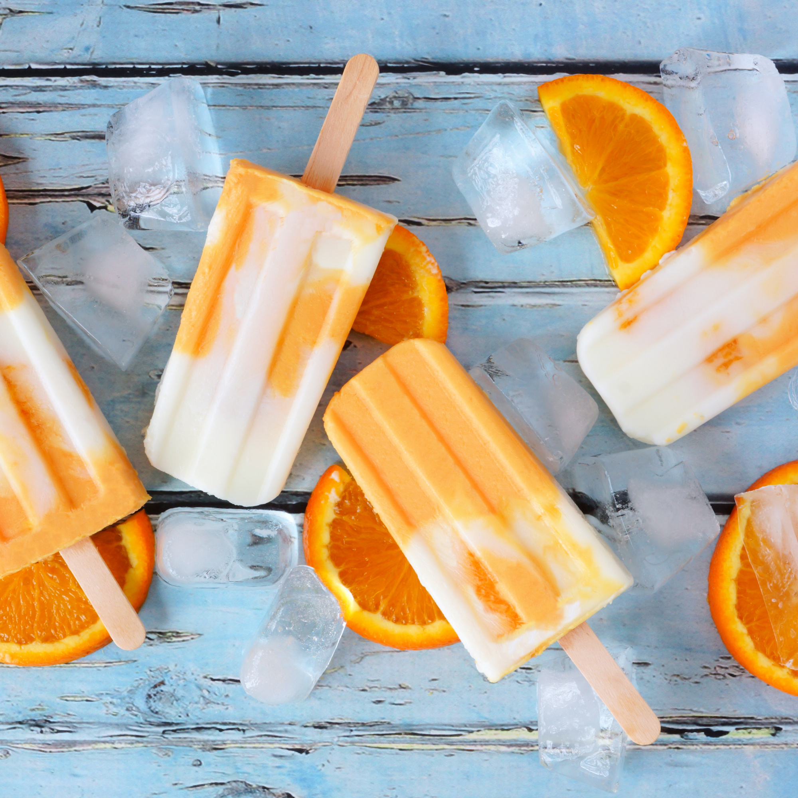

Homemade Creamsicles
Difficulty
Easy/Beginner
Prep time
10 mins
Total Time
8hrs 10 mins
Yields
Difficulty
Prep time
Total Time
Yields
Feeling nostalgic? Bring back your childhood memories with a batch of these delicious homemade orange Creamsicle bars. Super-simple to make, these frozen bars are a refreshing, easy dessert to enjoy on those too-hot summer days.
In a blender, blend orange juice concentrate, cream, granulated sugar, vanilla, and salt on medium-low speed until combined.
Add a little bit of food coloring (if using) and continue to blend until desired color is reached. Transfer to a medium bowl. Cover and refrigerate until ready to use.
In another medium bowl, whisk yogurt, cream, granulated sugar, vanilla, and salt. Cover and refrigerate until ready to use.
Pour 1 heaping tablespoon yogurt base into a 3-oz. ice pop mold, then pour in 1 tablespoon orange base. Repeat with yogurt and orange bases until you have 10 ice pops. Cover and insert sticks. Freeze until firm, at least 8 hours or up to overnight.
Dip molds briefly into warm water to release pops. Enjoy!
12 oz. frozen orange juice concentrate
1/2 c. heavy cream
1/4 c. granulated sugar
1/2 tsp. pure vanilla extract
1/8 tsp. kosher salt
Orange food coloring (optional)
1 c. full-fat plain yogurt
1 c. heavy cream
1/4 c. granulated sugar
1 tsp. pure vanilla extrac
1/8 tsp. kosher salt